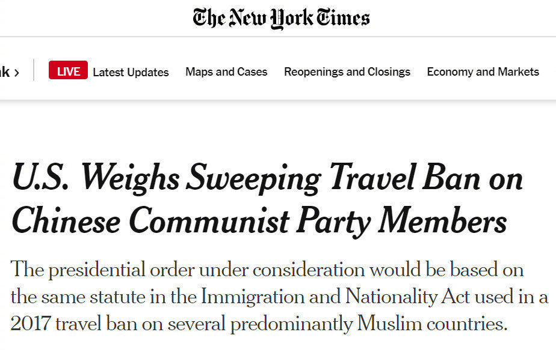

感谢美国！
@侠客岛:
【美媒：#美国考虑对所有中国共产党员实施旅行禁令#】据纽约时报报道，知情人士透露，特朗普政府正在考虑全面禁止中国共产党员及其家属赴美旅行，拟议中的总统公告还可能授权美国政府撤销在美中国共产党员及其家属的签证。
但纽约时报承认，如此广泛的禁令将是自2018年两国之间的贸易战以来美国对中国采取的最具挑衅性的行动，也将进一步毒害中美关系。纽约时报称该计划的细节尚未最终确定，特朗普最终可能会拒绝该计划。
但纽约时报承认，如此广泛的禁令将是自2018年两国之间的贸易战以来美国对中国采取的最具挑衅性的行动，也将进一步毒害中美关系。纽约时报称该计划的细节尚未最终确定，特朗普最终可能会拒绝该计划。
- 